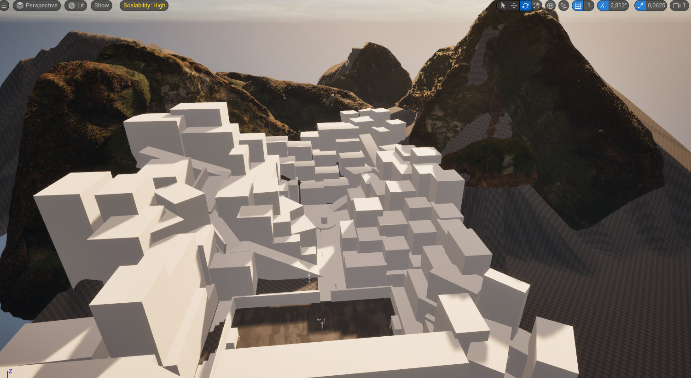
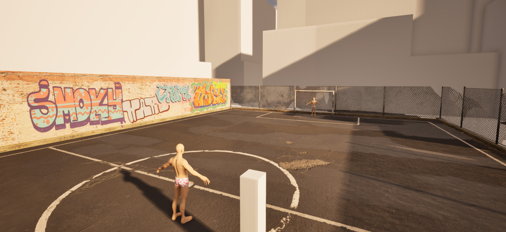
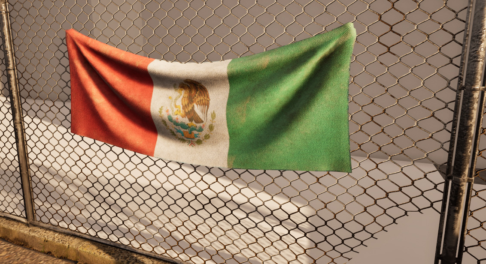
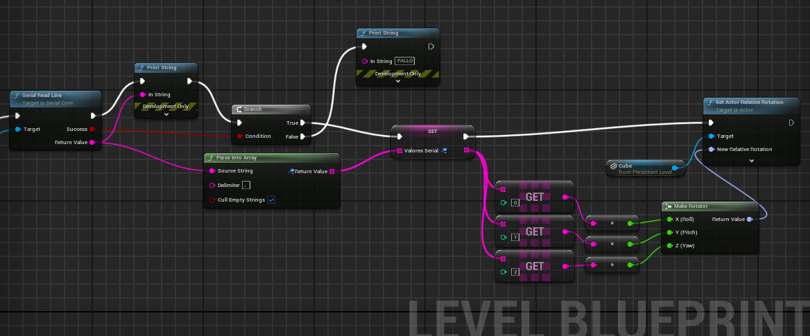
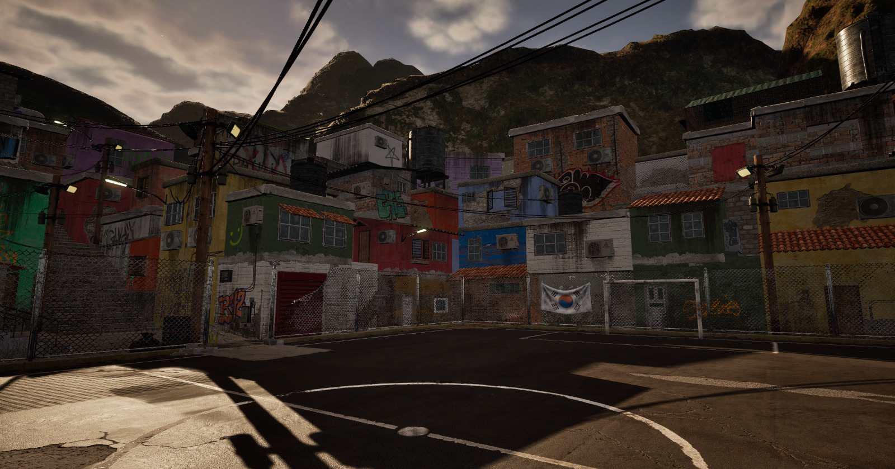
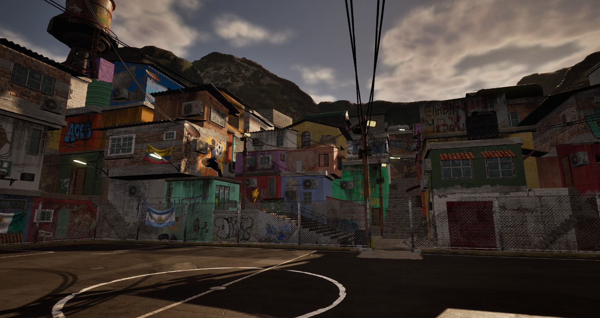

Desarrollar soluciones tecnológicas innovadoras que integren simulación, sensores físicos y sistemas interactivos para mejorar los procesos de entrenamiento deportivo.
Posicionarse como una empresa especializada en simuladores deportivos, enfocada en el desarrollo de herramientas de entrenamiento basadas en realidad virtual y captura de movimiento.
Ofrecer soluciones accesibles y de bajo costo que permitan a instituciones deportivas, entrenadores y atletas acceder a tecnologías avanzadas de entrenamiento.
Generar productos escalables, capaces de adaptarse a distintos deportes, niveles de entrenamiento y contextos educativos o profesionales.
Consolidar alianzas con instituciones deportivas y educativas para validar, mejorar e implementar los sistemas desarrollados en entornos reales de entrenamiento.
Objetivos de la empresa
Investigación y desarrollo: diseñar sistemas de simulación interactiva que combina hardware y software para la captura y análisis de movimientos deportivos.
Innovación tecnológica: integrar sensores como acelerómetros, giroscopios y dispositivos hápticos para aumentar el realismo y la interacción física dentro de los simuladores.
Optimización de costos: desarrollar prototipos basados en microcontroladores y componentes accesibles que permitan mantener bajos los costos de producción.
Validación del producto: realizar pruebas con usuarios para evaluar la precisión, funcionalidad y utilidad del sistema en contextos reales de entrenamiento.
Expansión del producto: ampliar el catálogo de simuladores hacia otros ejercicios o disciplinas deportivas que requieran análisis técnico del movimiento.
Análisis de rendimiento: implementar sistemas de registro y análisis de datos que permitan medir el progreso del atleta a lo largo del tiempo.
Nuestro mas reciente proyecto

White room

Bases

Elementos

Desarrollo unreal

Resultados finales
En el fútbol, el remate de cabeza es una de las técnicas más complejas de perfeccionar debido a la dificultad de replicar estas situaciones reales de juego.
Este proyecto busca crear una opción accesible a una herramienta para el entrenamiento de alto rendimiento mediante el uso de Realidad Virtual (RV), obligando al atleta a ejecutar la cadena de movimientos correcta: salto y golpe.
¿Qué nos motivó?
La motivación surgió de la necesidad de modernizar el entrenamiento deportivo mediante el uso de las tecnologías actuales. En el fútbol, el remate de cabeza es una de las técnicas más complejas de perfeccionar debido a la dificultad de replicar estas situaciones reales de juego (centros, tiros libres, tiro de esquina, competencia de física) de manera controlada y repetitiva sin el desgaste físico de un partido real. Este proyecto busca crear una opción accesible a una herramienta para el entrenamiento de alto rendimiento mediante el uso de Realidad Virtual (RV).

Este simulador de entrenamiento demuestra que es posible la integración de hardware accesible con motores de desarrollo de videojuegos para la creación de herramientas útiles para el entrenamiento deportivo. Esto proporciona un entorno controlado donde el atleta puede practicar la técnica de forma repetitiva mientras se registran los datos sobre su ejecución. Así, el simulador no solo funciona como una herramienta de práctica, sino también como un instrumento de apoyo para entrenadores, quienes pueden complementar su observación basados en la información obtenida de los sensores.